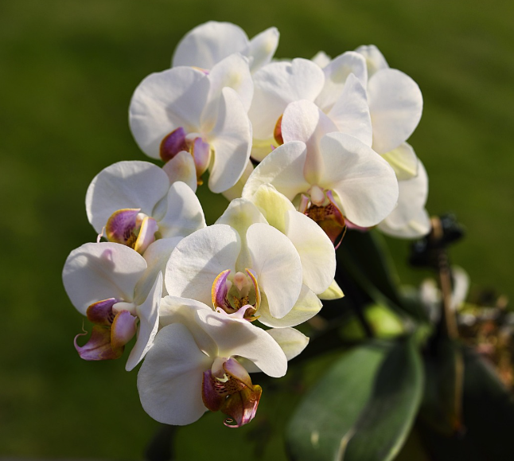

Orkide (Orchidaceae), gösterişli çiçekleri ve zarif görünümüyle bilinen, dünya genelinde en yaygın yetiştirilen süs bitkilerinden biridir Doğada binlerce farklı türü bulunur ancak ev ortamında en sık Phalaenopsis (güve orkidesi) türü tercih edilir.
2026 Abdullah Kağan Doğan
Bu Site HTML ve CSS Pratiği İçin Hazırlanmıştır